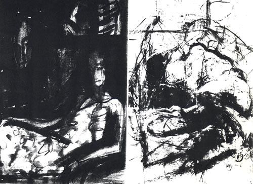

Details
Vernissage: 16. Oktober 1992
Die Ausstellung war bis Anfang Dezember 1992 zu besichtigen.
Neue Tafelbilder aus dem ehemaligen Osten

Vernissage: 16. Oktober 1992
Die Ausstellung war bis Anfang Dezember 1992 zu besichtigen.